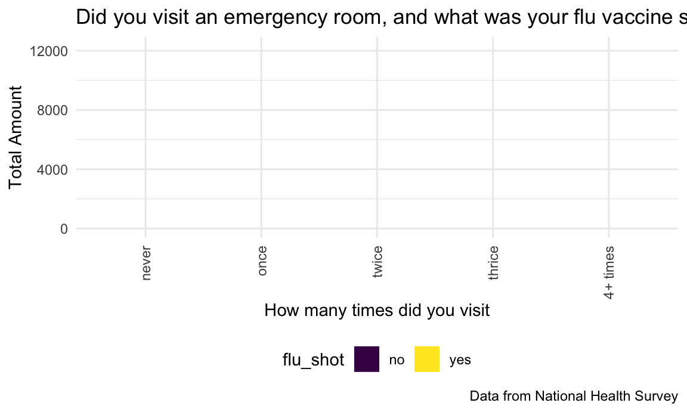
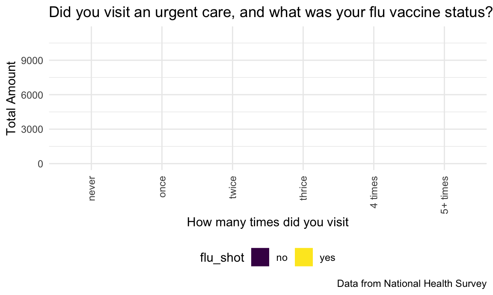

focus is on flu vaccines
library(tidyverse)## ── Attaching packages ─────────────────────────────────────── tidyverse 1.3.0 ──## ✓ ggplot2 3.3.2 ✓ purrr 0.3.4
## ✓ tibble 3.0.1 ✓ dplyr 1.0.0
## ✓ tidyr 1.1.0 ✓ stringr 1.4.0
## ✓ readr 1.3.1 ✓ forcats 0.5.0## ── Conflicts ────────────────────────────────────────── tidyverse_conflicts() ──
## x dplyr::filter() masks stats::filter()
## x dplyr::lag() masks stats::lag()library(plotly)##
## Attaching package: 'plotly'## The following object is masked from 'package:ggplot2':
##
## last_plot## The following object is masked from 'package:stats':
##
## filter## The following object is masked from 'package:graphics':
##
## layoutlibrary(wesanderson)
library(gganimate)
library(gifski)
library(transformr)
library(magick)## Linking to ImageMagick 6.9.11.32
## Enabled features: cairo, fontconfig, freetype, lcms, pango, rsvg, webp
## Disabled features: fftw, ghostscript, x11library(png)
library(patchwork)
library(ggridges)knitr::opts_chunk$set(
fig.width = 6,
fig.asp = .6,
out.width = "90%"
)
theme_set(theme_minimal() + theme(legend.position = "bottom"))
options(
ggplot2.continuous.colour = "viridis",
ggplot2.continuous.fill = "viridis"
)
scale_colour_discrete = scale_color_viridis_d
scale_fill_discrete = scale_fill_viridis_dnot really sure what this data set contains. need to look into this more
adult sample for 2019
** there is ALOT of information and variables within this dataset. we can take this into many different directions **
adult_df =
read_csv("adult19.csv")## Parsed with column specification:
## cols(
## .default = col_double(),
## OGFLG_A = col_logical(),
## OPFLG_A = col_logical(),
## CHFLG_A = col_logical(),
## PRPLCOV2_C_A = col_logical(),
## STOMAAGETC_A = col_logical(),
## LARYNAGETC_A = col_logical(),
## GALLBAGETC_A = col_logical(),
## BRAINAGETC_A = col_logical(),
## BLOODAGETC_A = col_logical(),
## SHINGWHEN_A = col_logical(),
## OGHDHP_A = col_logical(),
## OPHDHP_A = col_logical(),
## CHHDHP_A = col_logical(),
## HHX = col_character()
## )## See spec(...) for full column specifications.## Warning: 107 parsing failures.
## row col expected actual file
## 1348 BLOODAGETC_A 1/0/T/F/TRUE/FALSE 45 'adult19.csv'
## 1375 BRAINAGETC_A 1/0/T/F/TRUE/FALSE 16 'adult19.csv'
## 1790 BLOODAGETC_A 1/0/T/F/TRUE/FALSE 62 'adult19.csv'
## 1924 OPHDHP_A 1/0/T/F/TRUE/FALSE 2 'adult19.csv'
## 3306 BLOODAGETC_A 1/0/T/F/TRUE/FALSE 58 'adult19.csv'
## .... ............ .................. ...... .............
## See problems(...) for more details.there is an interesting category pertaining to mobility, this could be helpful if we end up discussing accessbility to loaction to obtain a flu shot
there is also interesting category of variables pertaining to insurance plans and coverage.
interesting category of variables pertaining to utilization of healthcare services, outside of the scope of only flu vaccines.
flu_adult_df =
adult_df %>%
janitor::clean_names() %>%
select(
srvy_yr,agep_a, age65, sex_a, educ_a,hisp_a, hispallp_a, hisdetp_a,phstat_a,bmicat_a, notcov_a, cover_a, usualpl_a, usplkind_a, pregfluyr_a, shtflu12m_a, shtflum_a, shtfluy_a, flupreg2_a, raceallp_a, pregnow_a, disab3_a, socerrnds_a, cover65_a, lastdr_a, emerg12mtc_a, urgnt12mtc_a, natusborn_a,citznstp_a, povrattc_a, pregnow_a, paybll12m_a, hhx
) %>%
mutate(
id = hhx,
age = as.factor(agep_a),
age65 = case_when(
age65 == "1" ~ "Less than 65",
age65 == "2" ~ "65 or older",
age65 == "7" ~ "No response",
age65 == "8" ~ "Not applicable",
age65 == "9" ~ "Don't know"),
sex = case_when(
sex_a == "1" ~ "Male",
sex_a == "2" ~ "Female",
sex_a == "7" ~ "No response",
sex_a == "8" ~ "Not applicable",
sex_a == "9" ~ "Don't know"),
education = case_when(
educ_a == "0" ~ "never attended",
educ_a == "1" ~ "Grades 1-11",
educ_a == "2" ~ "12th grade, no dipolma",
educ_a == "3" ~ "GED",
educ_a == "4" ~ "HS graduate",
educ_a == "5" ~ "College, no degree",
educ_a == "6" ~ "Associate degree-tech",
educ_a == "7" ~ "Associate degree-aca",
educ_a == "8" ~ "Bachelor's degree",
educ_a == "9" ~ "Master's degree",
educ_a == "10" ~ "Professional school",
educ_a == "11" ~ "Doctoral degree",
educ_a == "97" ~ "No response",
educ_a == "98" ~ "Not applicable",
educ_a == "99" ~ "Don't know"),
hispanic = case_when(
hisp_a == "1" ~ "Yes",
hisp_a == "2" ~ "No",
hisp_a == "7" ~ "No response",
hisp_a == "8" ~ "Not applicable",
hisp_a == "9" ~ "Don't know"),
nh_race = case_when(
hispallp_a == "1" ~ "hispanic",
hispallp_a == "2" ~ "NH white",
hispallp_a == "3" ~ "NH black",
hispallp_a == "4" ~ "NH asian",
hispallp_a == "5" ~ "NH AIAN",
hispallp_a == "6" ~ "NH AIAN and other",
hispallp_a == "7" ~ "multiple races",
hispallp_a == "97" ~ "No response",
hispallp_a == "98" ~ "Not applicable",
hispallp_a == "99" ~ "Don't know"),
hispanic_type = case_when(
hisdetp_a == "1" ~ "hispanic mexican",
hisdetp_a == "2" ~ "hispanic all others",
hisdetp_a == "3" ~ "Not hispanic",
hisdetp_a == "7" ~ "No response",
hisdetp_a == "8" ~ "Not applicable",
hisdetp_a == "9" ~ "Don't know"),
health = case_when(
phstat_a == "1" ~ "excellent",
phstat_a == "2" ~ "very good",
phstat_a == "3" ~ "good",
phstat_a == "4" ~ "fair",
phstat_a == "5" ~ "poor",
phstat_a == "7" ~ "no response",
phstat_a == "8" ~ "not applicable",
phstat_a == "9" ~ "Don't know"),
bmi = case_when(
bmicat_a == "1" ~ "underweight",
bmicat_a == "2" ~ "healthy weight",
bmicat_a == "3" ~ "overweight",
bmicat_a == "4" ~ "obese",
bmicat_a == "9" ~ "unknown"),
insurance = case_when(
notcov_a == "1" ~ "not covered",
notcov_a == "2" ~ "covered",
notcov_a == "7" ~ "no response",
notcov_a == "8" ~ "not applicable",
notcov_a == "9" ~ "don't know"),
coverage = case_when(
cover_a == "1" ~ "private",
cover_a == "2" ~ "medicaid/other public",
cover_a == "3" ~ "other",
cover_a == "4" ~ "uninsured",
cover_a == "5" ~ "don't know"),
facility_type = case_when(
usplkind_a == "1" ~ "Doctor office/health center",
usplkind_a == "2" ~ "Urgent care/clinic in store",
usplkind_a == "3" ~ "emergency room",
usplkind_a == "4" ~ "VA center ",
usplkind_a == "5" ~ "other",
usplkind_a == "6" ~ "varies",
usplkind_a == "8" ~ "not applicable",
usplkind_a == "9" ~ "don't know"),
pregfluyr_a = case_when(
pregfluyr_a == "1" ~ "yes",
pregfluyr_a == "2" ~ "no",
pregfluyr_a == "7" ~ "no response",
pregfluyr_a == "8" ~ "not applicable",
pregfluyr_a == "9" ~ "don't know"),
flu_shot = case_when(
shtflu12m_a == "1" ~ "yes",
shtflu12m_a == "2" ~ "no",
shtflu12m_a == "7" ~ "no response",
shtflu12m_a == "8" ~ "not applicable",
shtflu12m_a == "9" ~ "don't know"),
flu_shot_month = case_when(
shtflum_a == "1" ~ "January",
shtflum_a == "2" ~ "February",
shtflum_a == "3" ~ "March",
shtflum_a == "4" ~ "April",
shtflum_a == "5" ~ "May",
shtflum_a == "6" ~ "June",
shtflum_a == "7" ~ "July",
shtflum_a == "8" ~ "August",
shtflum_a == "9" ~ "September",
shtflum_a == "10" ~ "October",
shtflum_a == "11" ~ "November",
shtflum_a == "12" ~ "December",
shtflum_a == "97" ~ "No response",
shtflum_a == "98" ~ "Not applicable",
shtflum_a == "99" ~ "Don't know"),
flu_shot_year = case_when(
shtfluy_a == "9997" ~ "no response",
shtfluy_a == "9998" ~ "not applicable",
shtfluy_a == "9999" ~ "don't know"),
flushot_preg = case_when(
flupreg2_a == "1" ~ "before pregnancy",
flupreg2_a == "2" ~ "during pregnancy",
flupreg2_a == "3" ~ "after pregnancy",
flupreg2_a == "7" ~ "no response",
flupreg2_a == "8" ~ "not applicable",
flupreg2_a == "9" ~ "don't know"),
usual_place = case_when(
usualpl_a == "1" ~ "yes",
usualpl_a == "2" ~ "no",
usualpl_a == "3" ~ "more than one place",
usualpl_a == "7" ~ "no response",
usualpl_a == "8" ~ "not applicable",
usualpl_a == "9" ~ "don't know"))flu_adult_df =
flu_adult_df %>%
mutate(
pregnant = case_when(
pregnow_a == "1" ~ "yes",
pregnow_a == "2" ~ "no",
pregnow_a == "7" ~ "No response",
pregnow_a == "8" ~ "Not applicable",
pregnow_a == "9" ~ "Don't know"),
disability = case_when(
disab3_a == "1" ~ "yes",
disab3_a == "2" ~ "no",
disab3_a == "9" ~ "don't know"),
errands_alone_diff = case_when(
socerrnds_a == "1" ~ "none",
socerrnds_a == "2" ~ "some",
socerrnds_a == "3" ~ "a lot",
socerrnds_a == "4" ~ "cannot do at all",
socerrnds_a == "7" ~ "no response",
socerrnds_a == "8" ~ "not applicable",
socerrnds_a == "9" ~ "don't know"),
coverage_65 = case_when(
cover65_a == "1" ~ "private",
cover65_a == "2" ~ "dual eligible",
cover65_a == "3" ~ "medicare advantage",
cover65_a == "4" ~ "medicare only",
cover65_a == "5" ~ "other",
cover65_a == "6" ~ "uninsured",
cover65_a == "7" ~ "don't know"))flu_adult_df =
flu_adult_df %>%
mutate(
last_drvisit = case_when(
lastdr_a == "0" ~ "never",
lastdr_a == "1" ~ "within past year",
lastdr_a == "2" ~ "within last 2 years",
lastdr_a == "3" ~ "within last 3 years",
lastdr_a == "4" ~ "within last 5 years",
lastdr_a == "5" ~ "within last 10 years",
lastdr_a == "6" ~ "10+ years",
lastdr_a == "7" ~ "refused",
lastdr_a == "8" ~ "not applicable",
lastdr_a == "9" ~ "don't know"),
emergency_visits = case_when(
emerg12mtc_a == "0" ~ "never",
emerg12mtc_a == "1" ~ "once",
emerg12mtc_a == "2" ~ "twice",
emerg12mtc_a == "3" ~ "thrice",
emerg12mtc_a == "4" ~ "4+ times",
emerg12mtc_a == "7" ~ "refused",
emerg12mtc_a == "8" ~ "not applicable",
emerg12mtc_a == "9" ~ "don't know"),
urgentcare_visits = case_when(
urgnt12mtc_a == "0" ~ "never",
urgnt12mtc_a == "1" ~ "once",
urgnt12mtc_a == "2" ~ "twice",
urgnt12mtc_a == "3" ~ "thrice",
urgnt12mtc_a == "4" ~ "4 times",
urgnt12mtc_a == "5" ~ "5+ times",
urgnt12mtc_a == "7" ~ "refused",
urgnt12mtc_a == "8" ~ "not applicable",
urgnt12mtc_a == "9" ~ "don't know")
)flu_adult_df =
flu_adult_df %>%
mutate(
usborn = case_when(
natusborn_a == "1" ~ "yes",
natusborn_a == "2" ~ "no",
natusborn_a == "7" ~ "No response",
natusborn_a == "8" ~ "Not applicable",
natusborn_a == "9" ~ "Don't know"),
probs_paybill = case_when(
paybll12m_a == "1" ~ "yes",
paybll12m_a == "2" ~ "no",
paybll12m_a == "7" ~ "No response",
paybll12m_a == "8" ~ "Not applicable",
paybll12m_a == "9" ~ "Don't know"))last tidy up
flu_adult_df =
flu_adult_df %>%
select(-agep_a, -sex_a, -educ_a,-hisp_a,-phstat_a,-bmicat_a, -cover_a, -usplkind_a, -pregfluyr_a, -shtflu12m_a, -shtflum_a, -shtfluy_a, -flupreg2_a, -pregnow_a, -disab3_a, -socerrnds_a, -cover65_a, -lastdr_a, -emerg12mtc_a, -urgnt12mtc_a, -natusborn_a, -pregnow_a, -paybll12m_a
)flu_adult_df =
flu_adult_df %>%
select(
-hispallp_a, -hisdetp_a, -citznstp_a, -povrattc_a, -raceallp_a, -usualpl_a, -notcov_a, -hhx
)flu_adult_df =
flu_adult_df %>%
mutate(
sex = as.factor(sex),
nh_race = as.factor(nh_race),
health = as.factor(health),
bmi = as.factor(bmi),
age = as.numeric(age)
)flu_adult_df =
flu_adult_df %>%
mutate(
coverage = as.factor(coverage),
education = as.factor(education),
insurance = as.factor(insurance),
flu_shot = as.factor(flu_shot),
flu_shot_month = as.factor(flu_shot_month))flu_adult_df =
flu_adult_df %>%
mutate(
bmi = fct_relevel(bmi, "underweight", "healthy weight", "overweight", "obese"),
flu_shot_month = fct_relevel(flu_shot_month,"January","February","March","April","May","June","July","August","September","October","November","December"),
last_drvisit = fct_relevel(last_drvisit,"within past year","within last 2 years","within last 3 years","within last 5 years","within last 10 years","10+ years", "never"),
education = fct_relevel(education,
"never attended",
"Grades 1-11",
"12th grade, no dipolma",
"GED",
"HS graduate",
"College, no degree",
"Associate degree-tech",
"Associate degree-aca",
"Bachelor's degree",
"Master's degree",
"Professional school",
"Doctoral degree"),
flushot_preg = fct_relevel(flushot_preg, "before pregnancy", "during pregnancy", "after pregnancy"),
emergency_visits = fct_relevel(emergency_visits,
"never","once","twice","thrice","4+ times"),
urgentcare_visits = fct_relevel(urgentcare_visits,
"never","once","twice","thrice","4 times","5+ times"),
health = fct_relevel(health, "poor", "fair", "good", "very good", "excellent"),
errands_alone_diff = fct_relevel(errands_alone_diff, "none", "some", "a lot", "cannot do at all")
)plots bebe
Starting off we can see that females are more likely to get a flu shot than not, this does not appear to be the same trend with men. Men are more likely to not receive a flu shot than to get one.
DONE
sex_plot =
flu_adult_df %>%
filter(flu_shot != "no response") %>%
filter(flu_shot != "not applicable") %>%
filter(flu_shot != "don't know") %>%
filter(sex != "No response") %>%
mutate(flu_shot = fct_infreq(flu_shot)) %>%
ggplot(aes( x = flu_shot, fill = sex)) + geom_bar(position = "dodge") +
transition_layers(layer_length = 1,
transition_length = 1,
keep_layers = TRUE,
from_blank = TRUE,
layer_order = NULL,
layer_names = "flu_shot") + enter_grow() + exit_shrink() + ease_aes('sine-in') +
labs(
title = "Flu shot engagement amongst males and females",
x = "Did you receive a flu shot, yes or no?",
y = "Total Amount",
caption = "Data from National Health Survey")We know that the most vulnerable groups are those that are older and who have a BMI that is not consider healthy. Let’s consider those who did not receive a flu shot vs those who did.
DONE
age_plot =
flu_adult_df %>%
filter(flu_shot != "not applicable") %>%
filter(flu_shot != "don't know") %>%
filter(flu_shot != "no response") %>%
filter(age > 65) %>%
filter(bmi != "unknown") %>%
ggplot(aes(x = bmi, fill = flu_shot )) + geom_bar(position = "dodge") +
labs(
title = "Flu shot engagement by BMI for 65+",
x = "BMI",
y = "Total Amount",
caption = "Data from National Health Survey") +
transition_layers(layer_length = 1,
transition_length = 1,
keep_layers = TRUE,
from_blank = TRUE,
layer_order = NULL,
layer_names = "bmi") + enter_grow() + exit_shrink() + ease_aes('sine-in') Let’s look at insurance in relation to flu shots. Most of those receiving a flu shot are covered under private insurance. Shots typically occur in October, with November close behind.
DONE
coverage_plot =
flu_adult_df %>%
filter(flu_shot_month != "No response") %>%
filter(flu_shot_month != "Not applicable") %>%
filter(flu_shot_month != "Don't know") %>%
filter(coverage != "don't know") %>%
filter(coverage != "NA") %>%
mutate(coverage = fct_infreq(coverage)) %>%
ggplot(aes(y = coverage, x = flu_shot_month, color = coverage, alpha = .04)) + geom_jitter() +
labs(
title = "When did you get a flu shot, did insurance influence this decision?",
x = "Month",
y = "Insurance Coverage",
caption = "Data from National Health Survey") + theme(axis.text.x = element_text(angle = 90, vjust = 0.5, hjust=1)) + transition_states(
flu_shot_month,transition_length = 2, state_length = 1) + enter_grow() + exit_shrink() + ease_aes('sine-in-out')for those who didn’t receive a flu shot, most respondents did not have difficulty paying their hospital bill.
DONE
doctor_plot =
flu_adult_df %>%
filter(flu_shot == "no") %>%
filter(probs_paybill != "Don't know") %>%
filter(probs_paybill != "No response") %>%
filter(last_drvisit != "don't know") %>%
filter(last_drvisit != "refused") %>%
ggplot(aes(fill = probs_paybill, y = last_drvisit)) + geom_bar() +
labs(
title = "No flu shot? When was the last time you went to a healthcare provider and did you have difficulty paying your bill?",
x = "Total Amount",
y = "When did you see them?",
caption = "Data from National Health Survey") done
yes_age_plot =
flu_adult_df %>%
filter(flu_shot == "yes") %>%
filter(age > 17) %>%
plot_ly(y = ~age, color = ~education, type = "box", colors = "viridis") no_age_plot =
flu_adult_df %>%
filter(flu_shot == "no") %>%
filter(age > 17) %>%
plot_ly(y = ~age, color = ~education, type = "box", colors = "viridis") Seems like people are generally older when they receive a flu vaccine.
DONE How many people are pregnant? and if they are, did they receive a flu shot at all during that year? What factors contribute to women deciding to receive a flu shot?
pregnant_plot =
flu_adult_df %>%
filter(pregnant == "yes") %>%
filter(flu_shot != "not applicable") %>%
mutate(coverage = fct_infreq(coverage)) %>%
ggplot(aes(x = coverage, fill = flu_shot)) + geom_bar(position = "dodge") +
labs(
title = "For pregnant persons, did you get a flu shot, did insurance infulence this?",
x = "Insurance Coverage",
y = "Total Amount",
caption = "Data from National Health Survey") +
transition_layers(layer_length = 1,
transition_length = 1,
keep_layers = TRUE,
from_blank = TRUE,
layer_order = NULL,
layer_names = "coverage") + enter_grow() + exit_shrink() + ease_aes('sine-in') The majority of those who are pregnant receive their flu shot after pregnancy. This makes sense considering restricting of who can receive the vaccination.
DONE
pregnant2_plot =
flu_adult_df %>%
filter(flushot_preg != "NA") %>%
filter(flushot_preg != "no response") %>%
filter(flushot_preg != "don't know") %>%
ggplot(aes(x = flushot_preg, fill = flushot_preg, alpha = .5)) + geom_density() + theme(axis.text.x = element_text(angle = 90, vjust = 0.5, hjust=1)) +
labs(
title = "For pregnant persons, if you got a flu shot, when did this occur?",
x = "Timing in relation to pregnancy",
y = "Density",
caption = "Data from National Health Survey")emergency care
looks okay
emergency_plot =
flu_adult_df %>%
filter(flu_shot != "not applicable") %>%
filter(flu_shot != "don't know") %>%
filter(flu_shot != "no response") %>%
filter(emergency_visits != "don't know") %>%
filter(emergency_visits != "not applicable") %>%
filter(emergency_visits != "refused") %>%
ggplot(aes(x = emergency_visits, fill = flu_shot)) + geom_bar(position = "dodge") + theme(axis.text.x = element_text(angle = 90, vjust = 0.5, hjust=1)) + labs(
title = "Did you visit an emergency room, and what was your flu vaccine status?",
x = "How many times did you visit",
y = "Total Amount",
caption = "Data from National Health Survey") +
transition_layers(layer_length = 1,
transition_length = 1,
keep_layers = TRUE,
from_blank = TRUE,
layer_order = NULL,
layer_names = "emergency_visits") + enter_grow() + exit_shrink() + ease_aes('sine-in') emergency_plot
urgent care
looks good
urgent_plot =
flu_adult_df %>%
filter(flu_shot != "not applicable") %>%
filter(flu_shot != "don't know") %>%
filter(flu_shot != "no response") %>%
filter(urgentcare_visits != "don't know") %>%
filter(urgentcare_visits != "not applicable") %>%
filter(urgentcare_visits != "refused") %>%
ggplot(aes(x = urgentcare_visits, fill = flu_shot)) + geom_bar(position = "dodge") + theme(axis.text.x = element_text(angle = 90, vjust = 0.5, hjust=1)) + labs(
title = "Did you visit an urgent care, and what was your flu vaccine status?",
x = "How many times did you visit",
y = "Total Amount",
caption = "Data from National Health Survey") +
transition_layers(layer_length = 1,
transition_length = 1,
keep_layers = TRUE,
from_blank = TRUE,
layer_order = NULL,
layer_names = "urgentcare_visits") + enter_grow() + exit_shrink() + ease_aes('sine-in')urgent_plot
when we look at covid rates, we notice that black and brown communities are disproportionately affected by infection. Let’s look at this for Hispanic groups in regards to flu and health
want to make this more readable
?dodge for density??? ridge plot… ARGH WHAT IS THIS `
factor reorder for both variables
for those with a disability, who got a flu shot? and where are they going for their services? how much difficulty are they having with completing errands on their own?
disability_plot =
flu_adult_df %>%
filter(disability == "yes") %>%
filter(flu_shot != "don't know") %>%
filter(flu_shot != "no response") %>%
filter(flu_shot != "not applicable") %>%
filter(errands_alone_diff != "no response") %>%
filter(errands_alone_diff != "don't know") %>%
ggplot(aes(x = errands_alone_diff, fill = flu_shot)) + geom_bar(position = "dodge") + theme(axis.text.x = element_text(angle = 90, vjust = 0.5, hjust=1)) + labs(
title = "For persons with disabilities, did you have diffculty completing errands on your own, and what was your flu vaccine status?",
x = "How much difficulty?",
y = "Total Amount",
caption = "Data from National Health Survey") +
transition_layers(layer_length = 1,
transition_length = 1,
keep_layers = TRUE,
from_blank = TRUE,
layer_order = NULL,
layer_names = "urgentcare_visits") + enter_grow() + exit_shrink() + ease_aes('sine-in')